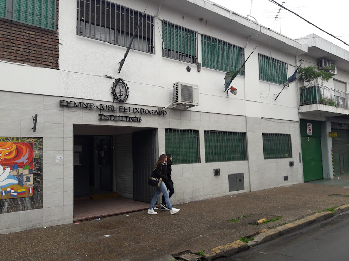

Acerca de mi
Soy desarrollador Full-Stack con una carrera en desarrollo de aplicaciones y gestion de la tecnologia. Tengo 3 años de experiencia en docencia, administracion de datos y atencion al cliente, toda experiencia obtenida en diversas escuelas secundarias de La Matanza, Buenos Aires Argentina. Poseo conocimientos en desarrollo web con HTML, TailwindCSS y Javascript. Ademas, poseo conocimientos en desarrollo de aplicaciones con visual basic, c#, Java y Python.
Educación
Tecnicatura en analisis, desarrollo y programacion de aplicaciones
Instituto de Formacion Docente y Tecnica N°46
Grado: Tecnicatura
Año de graduacion: 2019
Licenciatura en gestion tecnologica
Universidad Nacional de la Matanza

Grado: Licenciatura
Año de graduacion: 2023
Experiencia
Cuento con 5 años de experiencia en la docencia, enseñando a chicos de 4to año de secundaria en el area de la informatica.
Realice actividades administrativas en secretaria, entre ellas puedo destacar: carga de datos de alumnos recibidos para realizar su certificacion, administracion de datos tanto de docentes como de alumnos y atencion al cliente.
Tambien lleve a cabo diversos trabajos freelance de: edicion de videos, edicion de fotos, desarrollo de aplicaciones tanto de escritorio como web y paginas web.